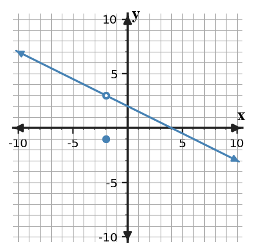

Complete the task and name the strategy or representation that makes your answer defensible. Use the graph to decide whether $f$ is continuous at $x=-2$. Identify the failed condition.

Graph of f.
Question 2
Complete the task and name the strategy or representation that makes your answer defensible. Determine $k$ so $g(x)=\begin{cases}2x-3,&x\le -1\\2x+k,&x\gt -1\end{cases}$ is continuous at $x=-1$.
Question 3
Complete the task and name the strategy or representation that makes your answer defensible. Two students classify a discontinuity at $x=-3$. Student A says removable because $f(-3)$ is undefined. Student B says jump because the one-sided limits are 2 and 4. Who is correct and why?
Station 1 Answers
Question 1
It is not continuous. The two-sided limit is $3$ but the function value is $-1$. Rationale: Read the y-value approached by the curve as x moves toward the target. The plotted value at the target is a separate function-value question.
Question 2
$k=-3$ Rationale: Compare the function value with the left-hand and right-hand limiting behavior. Continuity requires the two-sided limit to exist and equal the function value.
Question 3
Student B. Different finite one-sided limits create a jump; being undefined at the point alone does not make a discontinuity removable.
Station 2: Continuity and Discontinuity
1 copy per station
Question 4
Complete the task and name the strategy or representation that makes your answer defensible. Which statement guarantees continuity at $x=3$?
$f(3)$ exists
$\lim_{x\to 3}f(x)$ exists
$f(3)=\lim_{x\to 3}f(x)$ and both quantities exist
The graph has no x-intercept nearby
Question 5
Complete the task and name the strategy or representation that makes your answer defensible. Determine $k$ so $g(x)=\begin{cases}1x-2,&x\le 1\\4x+k,&x\gt 1\end{cases}$ is continuous at $x=1$.
Station 2 Answers
Question 4
C. Correct choice: C. $f(3)=\lim_{x\to 3}f(x)$ and both quantities exist Rationale: Continuity at the point requires three linked facts: the function value exists, the two-sided limit exists, and those two values are equal.
Question 5
$k=-5$ Rationale: Compare the function value with the left-hand and right-hand limiting behavior. Continuity requires the two-sided limit to exist and equal the function value.
Station 3: Continuity and Discontinuity
1 copy per station
Question 6
Complete the task and name the strategy or representation that makes your answer defensible. If $2-x^2\le h(x)\le 2+x^2$ near 0, determine $\lim_{x\to0}h(x)$.
Question 7
Complete the task and name the strategy or representation that makes your answer defensible. Evaluate $\lim_{x\to 2}(3x^2+5x-3)$ by direct substitution.
Station 3 Answers
Question 6
$2$ by the Squeeze Theorem. Rationale: Use the representation or algebraic relationship named in the prompt, show the key intermediate step, and verify that the result answers the exact quantity requested.
Question 7
$19$ Rationale: Substitute the requested value or use the stated relationship, then simplify in a clear sequence so the final value can be checked.
Station 4: Continuity and Discontinuity
1 copy per station
Question 8
Complete the task and name the strategy or representation that makes your answer defensible. Direct substitution in $\lim_{x\to 2}\frac{x^2-4}{x-2}$ produces $0/0$. What is the next appropriate routine step?
Question 9
Complete the task and name the strategy or representation that makes your answer defensible. Evaluate $\lim_{x\to 0}\frac{\sin(4x)}{4x}$.
Question 10
Complete the task and name the strategy or representation that makes your answer defensible. Evaluate $\lim_{x\to 7}\frac{\sqrt{x}-\sqrt{7}}{x-7}$.
Station 4 Answers
Question 8
Factor the numerator, then cancel the common factor for nearby x-values. Rationale: Use the representation or algebraic relationship named in the prompt, show the key intermediate step, and verify that the result answers the exact quantity requested.
Question 9
$1$ Rationale: Substitute the requested value or use the stated relationship, then simplify in a clear sequence so the final value can be checked.
Question 10
$\frac{1}{2\sqrt{7}}$ Rationale: Substitute the requested value or use the stated relationship, then simplify in a clear sequence so the final value can be checked.
Station 5: Continuity and Discontinuity
1 copy per station
Question 11
Complete the task and name the strategy or representation that makes your answer defensible. Simplify $\frac{x^2}{x^4}$ for $x\ne 0$.
Question 12
Complete the task and name the strategy or representation that makes your answer defensible. A line passes through $(-3,1)$ and $(3,-2)$. Find its slope.
Station 5 Answers
Question 11
$\frac{1}{x^{2}}$ Rationale: Apply the relevant algebraic identities, combine like factors or terms, and check that the simplified form is equivalent on the original domain.
Question 12
$m=\frac{-3}{6}=-0.5$. Rationale: Compute rise over run from the two points, keeping the subtraction order consistent in numerator and denominator.
Station 6: Continuity and Discontinuity
1 copy per station
Question 13
Complete the task and name the strategy or representation that makes your answer defensible. Write, but do not simplify, the difference quotient $\frac{f(2+h)-f(2)}{h}$ for $f(x)=3x^2+3x$.
Question 14
Complete the task and name the strategy or representation that makes your answer defensible. Solve the system $y=4x-1$ and $y=-1x-1$.
Question 15
Complete the task and name the strategy or representation that makes your answer defensible. State the domain of $k(x)=\sqrt{x+4}$.
Station 6 Answers
Question 13
$\frac{[3(2+h)^2+3(2+h)]-[3(2)^2+3(2)]}{h}$ Rationale: Substitute the two input values into the function, form the change in output over the change in input, and simplify only after the quotient is set up correctly.
Question 14
$(0,-1)$ Rationale: Eliminate one variable or set equivalent expressions equal, solve for the remaining variable, and substitute back to obtain the ordered pair.
Question 15
$x\ge -4$ Rationale: Apply the expression restrictions: denominators cannot be zero and even-root radicands must be nonnegative; express the allowed inputs in the requested form.
Station 7: Continuity and Discontinuity
1 copy per station
Question 16
Complete the task and name the strategy or representation that makes your answer defensible. Let $f(x)=3x+1$ and $g(x)=4x+3$. Compute $(f\circ g)(0)$.
Question 17
Complete the task and name the strategy or representation that makes your answer defensible. A sensor reading changes from 22 units at 3 s to 47 units at 8 s. Find the average rate of change.
Question 18
Complete the task and name the strategy or representation that makes your answer defensible. State the domain of $h(x)=\frac{x+2}{x+0}$.
Station 7 Answers
Question 16
First $g(0)=3$, then $f(3)=10$. Rationale: Use the representation or algebraic relationship named in the prompt, show the key intermediate step, and verify that the result answers the exact quantity requested.
Question 17
5 units per second. Rationale: Use the change in output divided by the change in input over the stated interval, then simplify with the given endpoint values.
Question 18
All real numbers except $x=0$. Rationale: Apply the expression restrictions: denominators cannot be zero and even-root radicands must be nonnegative; express the allowed inputs in the requested form.
Station 8: Continuity and Discontinuity
1 copy per station
Question 19
Complete the task and name the strategy or representation that makes your answer defensible. A line passes through $(-4,2)$ and $(2,1)$. Find its slope.
Question 20
Complete the task and name the strategy or representation that makes your answer defensible. Find the average rate of change of $p(x)=3x^2+0x$ on $[0,3]$.
Station 8 Answers
Question 19
$m=\frac{-1}{6}=-0.166667$. Rationale: Compute rise over run from the two points, keeping the subtraction order consistent in numerator and denominator.
Question 20
$\frac{p(3)-p(0)}{3-0}=\frac{27-0}{3}=9$. Rationale: Use the change in output divided by the change in input over the stated interval, then simplify with the given endpoint values.